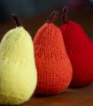

|
||
Premium Patterns Wintry Mix Mitts Love Bytes HawkeyeFree Patterns Kiddie Cadet Summerlin Ruffled Scarf Seamless DS Sock Simply Seamless Pouch Myriads of MushroomsExtras DIY Mitten Blocker Felt Patch Tutorial Yarn Dyeing Tutorial Needle Pouches Knitting Journal |
January 07, 2011 - Posted by Grace SchneblyA Very Peary ChristmasProject Specs Last year I made a bunch of sweets for my niece's birthday present. I knit a whole collection of chocolate covered strawberries, cupcakes, and doughnuts which she ended up just loving. This year I wanted to knit some fruits and veggies to add to her collection. There are so many patterns out there sometimes it was hard to decide which one to go with! I ended up knitting carrots, tomatoes, garlic, mushrooms, radishes, lemons, limes, oranges, plumes, and apples. But out of all of them the pears were my favorite to knit by far. One thing I love about knitting play food is that they always go so quickly! I was able to easily knit a few pears in one day. The pattern provides instructions for both small and large sized pears as well as a leaf. I chose to only knit the larger pears since they come out a very realistic size for a nice and juicy fruit, however I thought the tiny pears would make great Christmas ornaments. The only modification I made was to change to the stem color on the very last round of the top decreases (Round 6). This just helps to keep the top of the pear nice and round, otherwise you get a bit of a pointy look (I knit the yellow pear without doing this and didn't like the way it looked as well). I think the key to this pattern is to get the stuffing just right. Since the fabric created on US 3 needles is pretty tight, I didn't have to worry about the stuffing showing through if I stuffed them very full. It also helps to mold each fruit in your hands as you work with it. I also made sure to add extra stuffing in the top with tweezers after I got done with the last row of decreases. This really helps to fill out the top of the pear and keep it nice and rounded. After you've finished the pear and you see a dent or an uneven spot, stick one of the ends of your double pointed needle in to and move it around to fluff up the stuffing a bit. I think if I were to knit any more of these in the future I might sew up a little pouch of beans or poly pellets and place it in the bottom of the pear while stuffing to give it a bit of weight. Of all the presents Jojo got at Christmas, the play food seemed to be her favorite. Even my dad couldn't resist playing around with them! I'll be sure to post the rest of the items I made in the coming few weeks, so stay tuned! |
   Recent ReviewsRecent Posts
 Our Favorites
|
| © 2007 KathrynIvy.com | ||
{kind=link}